HSE Job was a niche recruitment platform for Health, Safety, and Environment (HSE) roles and related positions across different industries. The goal was to create a more transparent connection between job seekers and employers while making it easier to discover relevant opportunities and manage recruitment.
1. Project Overview
HSE Job started with a recurring observation: despite the daily circulation of HSE job openings on Instagram, finding a suitable opportunity remained difficult for many job seekers. Posts were scattered across accounts and stories, essential details such as company names, locations, and salaries were often missing, and applications were commonly handled through phone calls or messaging apps.
Employers faced challenges of their own. Although social media helped distribute vacancies through professional networks, managing incoming résumés and finding candidates who matched their needs remained difficult.
Before starting HSE Job, I had built a community of more than 5,000 followers through Instagram content about HSE and workplace safety. This gave us an opportunity to understand the problem through real user feedback and explore a product tailored to this professional community.
As a co-founder, I contributed to product strategy, UX/UI design, WordPress development, and social media content management.
The Goal
Build a specialized platform where job seekers could discover relevant opportunities more easily, while employers could present their organizations, publish vacancies, and review candidates through a more structured process.
2. Context and Opportunity Discovery
From a Content Community to a Product Opportunity
Before HSE Job, I created Instagram content about workplace safety and HSE-related topics. Through this work, I regularly encountered job postings shared as Instagram Stories, which disappeared from view after a limited period.
At first, Instagram seemed like an effective recruitment channel. Posts could spread quickly through followers and personal networks. However, the same process introduced several limitations.
• Job posts lacked a consistent structure, and important information was often missing.
• Candidates had to contact employers to clarify basic details about vacancies.
• Résumés were received through scattered channels, including WhatsApp.
• Job seekers needed to follow multiple accounts to discover relevant opportunities.
• Company identities and actual working conditions were not always clear before applying.
Meanwhile, my review of existing job platforms suggested that some HSE-related roles were underrepresented compared with the volume of vacancies circulating in the Instagram community.
The opportunity was not simply to create another job board. It was to turn an existing professional network into a more organized environment where vacancies, employer information, and applications could be managed in a more structured way.
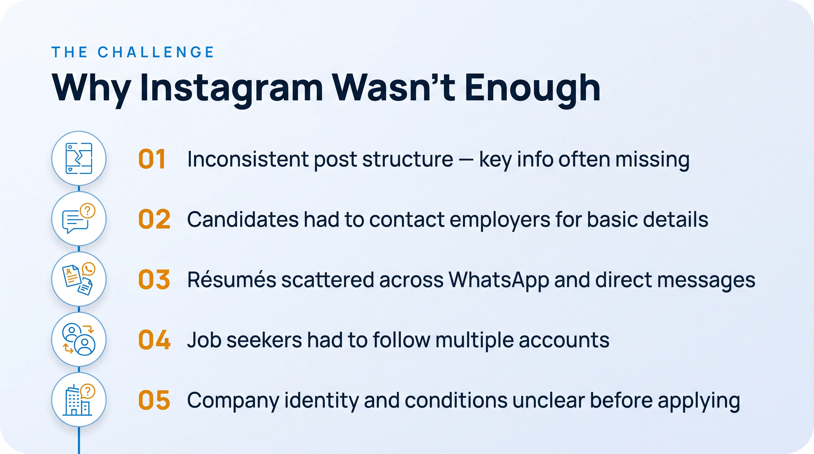
3. User Research
Research Objective
My goal was to understand how HSE professionals searched for jobs, what made evaluating opportunities difficult, and how employers published vacancies and managed recruitment.
Rather than relying solely on assumptions, I used the existing community to gather feedback about users' actual experiences.
Research Methods
Interactive Instagram Feedback
I used question boxes, polls, and quizzes to ask about job-search difficulty, recruitment channels, working conditions, and hiring experiences.
I received approximately 300 responses per round on average. Based on my estimate, around 99% of respondents were job seekers.
Direct Conversations with Employers and Recruitment Intermediaries
I spoke directly with approximately five to six employers or recruitment intermediaries through Instagram DMs to understand how they published vacancies, received résumés, and experienced hiring challenges.
Ecosystem and Job-Post Observation
I reviewed more than 20 HSE-related Instagram accounts to understand how vacancies were presented, which details were provided, and how candidates and employers connected.
These methods helped me investigate the problem in the environment where users were already looking for work. However, this was exploratory research based on community feedback and observation, rather than a formal study with a representative sample of the entire HSE job market.
Key Research Questions
The questions I asked through Instagram focused on several themes:
• How difficult or easy is it to find an HSE job?
• Which channels do you use to discover job opportunities?
• How would you describe your current working conditions, and what would you like to change?
• How long does recruitment take, and how often does it lead to a result?
• What are the main sources of dissatisfaction with your current job?
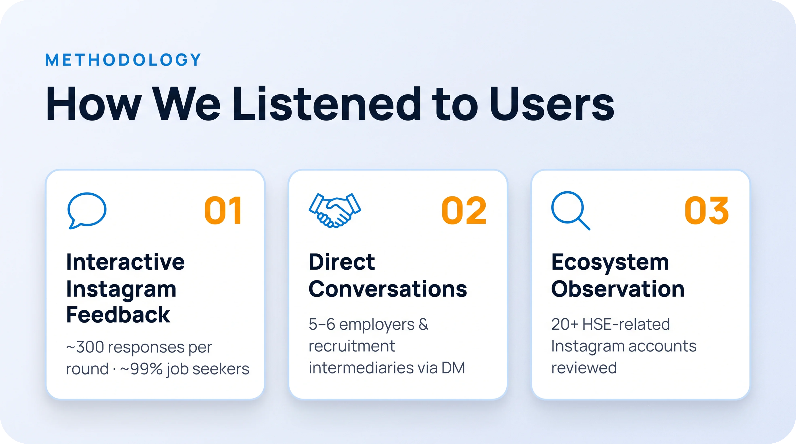
Research Findings
80% Found job searching difficult
Most respondents to this question considered finding a job difficult. This highlighted the need for a more centralized way to discover relevant opportunities.
Source: Instagram poll. The exact number of responses to this question was not recorded.
1. Job Discovery Relied on Scattered Networks
Many respondents found jobs through personal referrals and Instagram, while job websites were mentioned less frequently.
2. Insufficient Information Before Applying
Instagram job posts often lacked complete information about the employer, location, or salary. Candidates needed to contact employers directly to understand the opportunity.
3. Dissatisfaction with Compensation and Working Conditions
Many respondents were looking for better working conditions and felt their compensation did not reflect the difficulty of their work. At the same time, they generally remained interested in their professional field.
This suggested that clearer job information mattered when evaluating opportunities, although it did not establish that interface changes alone could solve job dissatisfaction.
4. A Time-Consuming Hiring Process
Many respondents described recruitment as time-consuming and said their efforts did not always lead to a satisfactory outcome.
5. Inconsistent Resume Submission
Some candidates sent their details as short, unstructured messages or submitted incomplete résumés. Employers, meanwhile, received applications through different channels.
Key Insight
The problem was not simply a lack of job postings. Opportunities were distributed across fragmented channels, while the information needed to evaluate a job, present an application, and review candidates was not organized into one coherent process.
Both sides relied on calls, messages, and manual follow-ups to complete a shared hiring process.
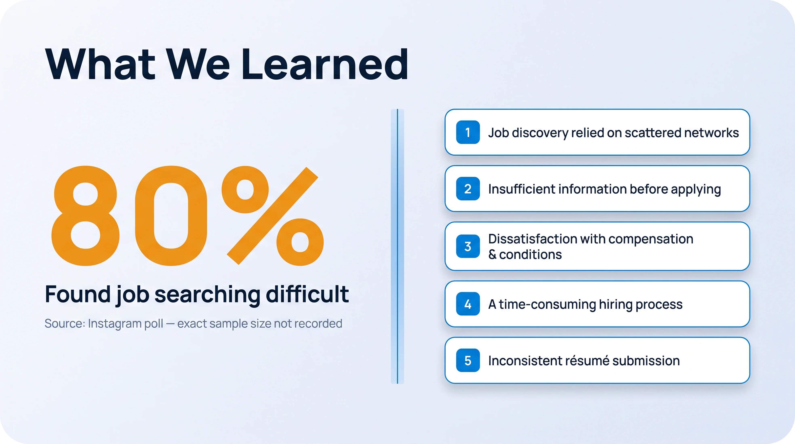
4. Problem Definition
Based on these findings, I framed the problem from two perspectives:
Job Seekers
HSE professionals lacked a centralized and structured way to discover relevant opportunities, evaluate working conditions, and present their qualifications. Incomplete job information and reliance on calls and messaging apps made the search and application process more difficult.
Employers
Employers relied heavily on informal channels to publish vacancies and introduce their workplaces. Receiving résumés from different sources and lacking a consistent structure for candidate information made it harder to manage applications and evaluate suitability.
The Shared Problem
Both groups needed clearer information, easier access, and a more organized process. However, the tools they used did not adequately connect job listings, employer information, candidate profiles, and applications.
How Might We?
How might we design an HSE recruitment experience that helps job seekers discover relevant opportunities and make informed decisions, while enabling employers to present their vacancies and evaluate suitable candidates more efficiently?
This question guided the product strategy and the prioritization of core features.
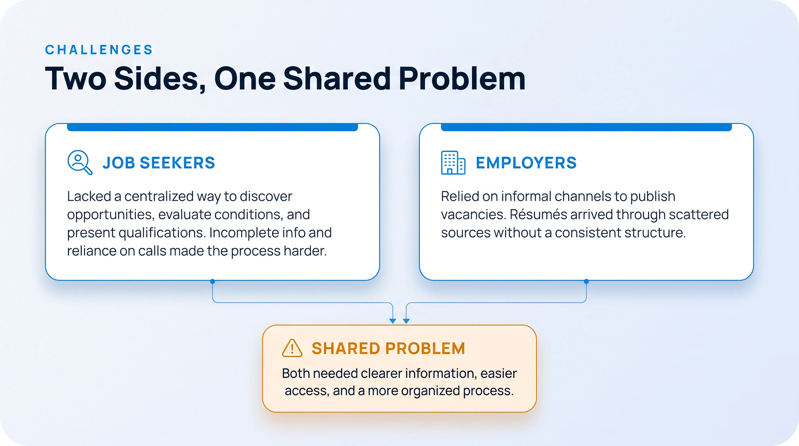
5. Product Goals and Success Measures
Before designing individual features, I separated the intended product outcomes from the solutions themselves.
Product Goals
• Centralize HSE-related job opportunities in a dedicated platform.
• Help candidates discover relevant roles and review job details before applying.
• Provide structured profiles for both job seekers and employers.
• Reduce reliance on phone calls and scattered résumé submissions.
• Enable employers to review applications and manage candidate statuses.
• Give companies a dedicated space to introduce themselves and provide more context about their workplaces.
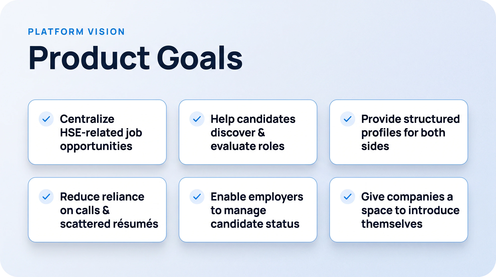
Success Measures
During the pilot, the metrics available to us included job-seeker and employer registrations, created and published vacancies, and sources of website traffic.
Because hiring outcomes were not consistently recorded within the platform, we could not reliably measure successful hires or determine whether recruitment efficiency had improved.
It was therefore important to distinguish measurable product activity from longer-term product outcomes. Registrations and published vacancies showed that people were using the platform, but they did not prove that hiring had become faster or more successful.
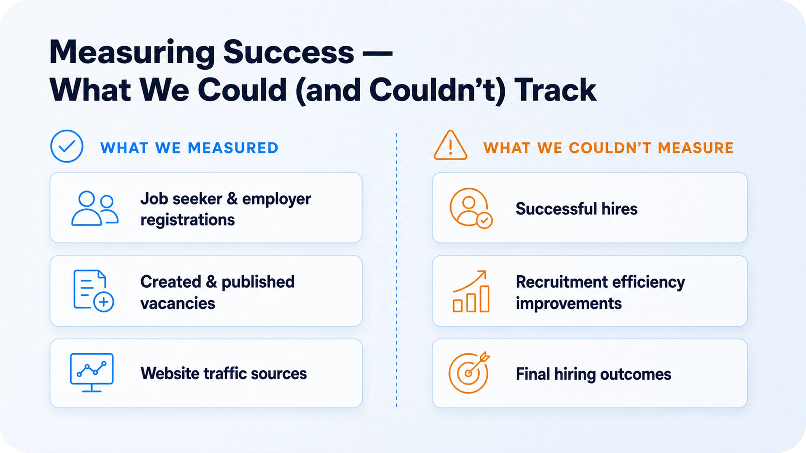
6. Solution Strategy
Why Not Just Another General Job Board?
The research suggested that the product needed to do more than host job advertisements. The experience had to connect three related needs:
1. Discovering relevant opportunities.
2. Understanding candidates and employers.
3. Managing job applications.
Because HSE roles exist across different industries and work environments, we also decided to organize vacancies by relevant industry categories rather than placing every role under a single, broad HSE label.
Designing for Two User Journeys
I designed two primary journeys:
• Job seeker journey: Create a resume profile, search listings, review job details, and submit an application.
• Employer journey: Complete a company profile, publish a vacancy, review applications, and search for candidates.
These journeys shared one platform. Candidate information could be reviewed by employers, while company information was available to job seekers before they applied.
7. Information Architecture and User Flows
Rather than forcing both audiences through the same experience, I defined separate user flows based on their goals.
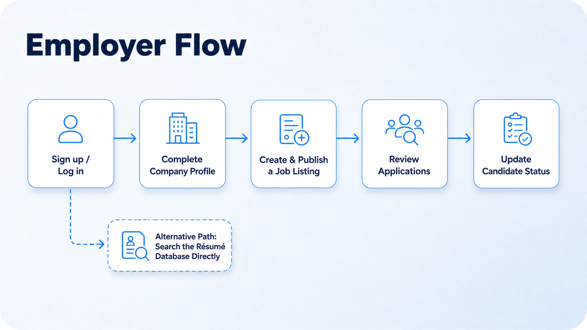
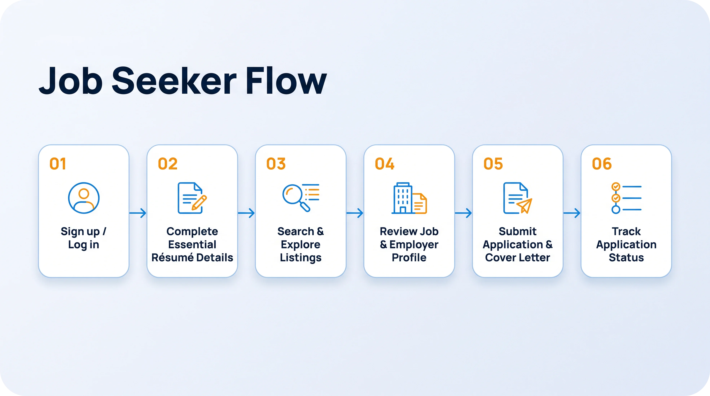
Industry-Based Job Categories
One key decision was to go beyond a single HSE category. Job seekers could explore roles within relevant industries, allowing them to consider not only the job title but also the type of workplace.
This decision reflected the specialized nature of HSE and the differences between industrial environments. The goal was to make opportunity discovery more relevant, although we did not conduct comparative testing to measure the impact of this categorization.
8. Key Design Decisions
8.1. Structured Candidate Profiles
Community feedback showed that some candidates submitted incomplete information or described their qualifications in short, unstructured messages.
To address this, I designed a résumé profile organized into sections such as education, work experience, skills, languages, location, and contact information.
This structure could help candidates present their qualifications more consistently and give employers a clearer basis for reviewing applications.
Human-centered decision: I did not require users to complete every section during registration. Essential information was mandatory, while sections such as the personal introduction and additional details could be completed later. The intention was to reduce initial friction.
Trade-off: Lowering the entry barrier meant some profiles remained incomplete. Since we did not conduct usability testing or analyze profile completion stop by step, we cannot conclude which level of mandatory information would have produced the best balance.
8.2. Employer Profiles as a Trust-Building Mechanism
In the existing recruitment experience, candidates sometimes encountered job posts without a clear company identity or sufficient information about the workplace.
I therefore designed employer profiles as dedicated company introduction pages rather than simple contact cards.
The available fields included company name, logo, contact information, website, location, industry, company size, founding year, and a company description.
The goal was to give candidates more context before applying and help employers present their organizations more effectively.
To encourage profile completion, we promoted the benefits of company profiles through social media. When employers left information incomplete, we sometimes found their websites and added publicly available company details ourselves.
This helped make profiles more informative and supported initial trust in the platform, although we did not measure its effect on profile completion or application rates.
8.3. More Structured Job Listings
I used common recruitment-platform patterns to structure the job-posting form. Many of the basic fields required for a job advertisement were already established conventions, so there was little value in reinventing them without evidence of a specific need.
The intention was to make job information more consistent and reduce ambiguity for candidates.
8.4. Applications and Candidate Status Management
Candidates could review a vacancy, submit an application, and optionally include a cover letter. Employers could review applications and mark candidates as accepted, rejected, or under review.
This was intended to provide a more organized process for handling applications and reduce reliance on scattered communication.
The résumé database also allowed employers to search for candidates proactively rather than relying only on incoming applications.
However, some employers continued the recruitment process through phone calls after receiving applications. As a result, the platform could not consistently capture the final hiring outcome.
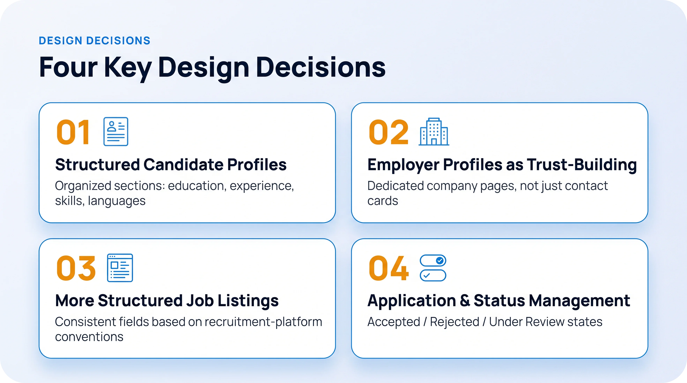
9. Visual Design and Product Identity
I chose blue as the primary color because it aligned with the themes of safety and trust associated with the HSE field.
Visual design supported the information architecture and user flows. The goal was not simply to create a professional-looking interface, but to present job details, employer information, and candidate qualifications in an understandable structure.
For job listings and résumé forms, I relied on established recruitment patterns while focusing on the specific requirements of HSE roles.
10. Implementation and Technical Constraints
Building the MVP with WordPress
I implemented the product using WordPress. At the time, the available plugins did not cover all our requirements. To achieve the intended behavior and appearance, I sometimes had to modify plugin PHP code directly.
This experience made product design a broader responsibility than designing screens. I had to balance user needs and design decisions against infrastructure limitations, plugin capabilities, and the team’s available time and resources.
One example was the free first job listing. The first listing was intended to be free, but the existing flow and the display of the available plans led some employers to believe they needed to pay before continuing.
I added explanatory information to clarify that the first listing was free. However, technical constraints prevented me from redesigning the entire flow as intended.
This experience reinforced an important lesson: a product offer can be free, but unless that is clear at the point of decision, users may still perceive a barrier.
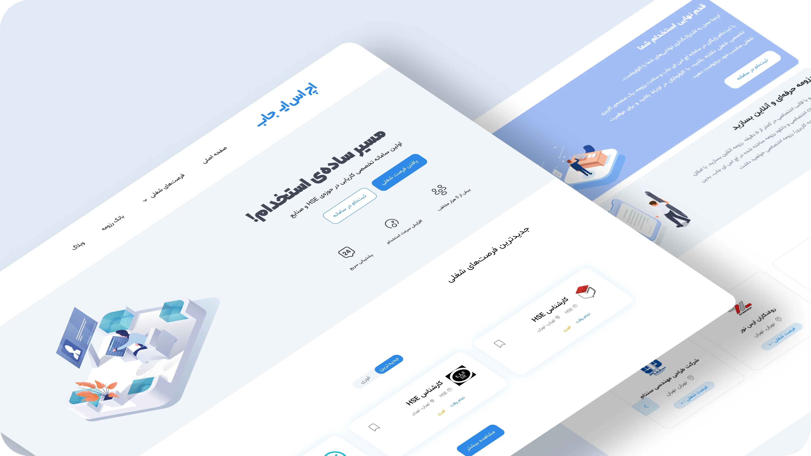
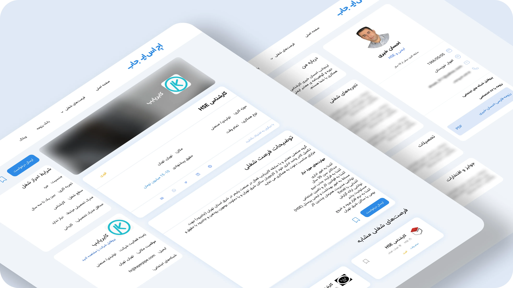
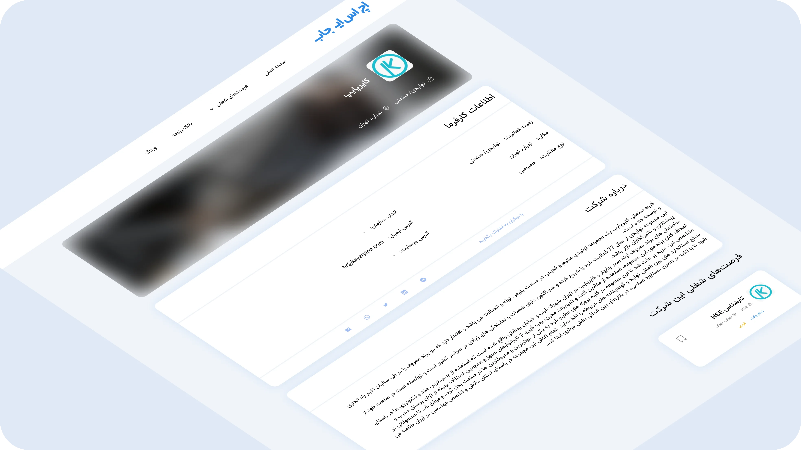
11. Pilot Launch and User Acquisition
We chose to launch the product on a small scale and start with the existing community. Instead of immediately pursuing broad acquisition, we introduced the platform to people already connected to the HSE field.
To reach employers, we also used industry-related communities and professional websites with forum-like structures, introducing the platform and publishing relevant content.
During the pilot, we recorded the following results:
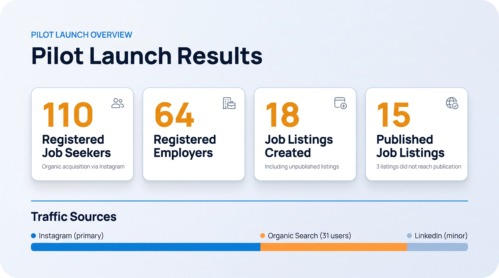
Organic Search and Educational Content
We also published HSE-related information, including salary-related content, to attract users through Google search. According to the project data, 31 job seekers entered the website through this channel. Social media, particularly Instagram, remained the primary acquisition source, while LinkedIn contributed only a small number of visitors.
This experience suggested that an existing professional community could provide an initial audience for a niche product, while relevant content could support discovery through organic search.
12. Outcomes and Product Limitations
What Did We Achieve?
During the pilot, HSE Job attracted 110 job seekers and 64 registered employers, and 15 job listings were published. These figures showed that the product reached real users and gained some traction within its intended community.
However, evaluating product success also required acknowledging the limitations of our data.
Limited Visibility into Hiring Outcomes
Some employers continued recruitment through phone calls or traditional processes after receiving applications. We therefore could not reliably determine which applications led to interviews or successful hires.
This was a limitation in the product's observability: the platform captured part of the interaction, but the final outcome did not always happen within the product.
Three Unpublished Listings
Of the 18 job listings created, three did not reach publication. One identified issue was confusion about whether the first listing was free.
The publication rate among created listings was:
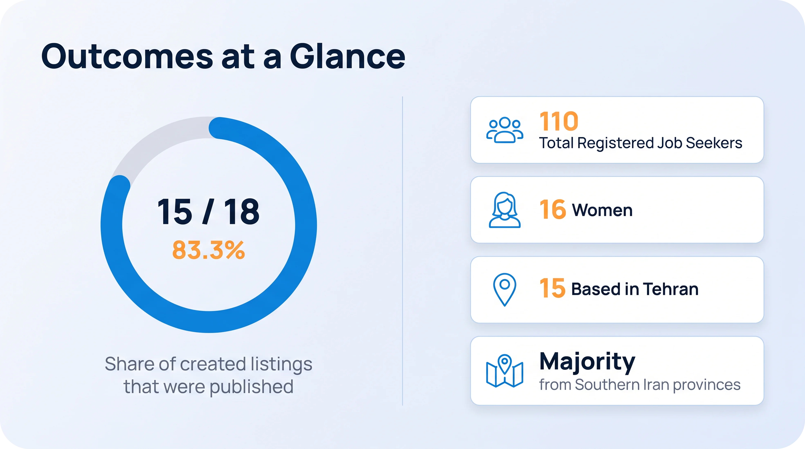
This represents the share of created listings that were published, not the conversion rate of all registered employers.
Incomplete Profiles
Some users did not complete their optional profile details. This was consistent with our decision to make only essential fields mandatory, but we did not have enough data to determine how much incomplete profiles affected application quality.
We therefore cannot conclude that requiring more information would necessarily have improved outcomes. It remained a hypothesis to investigate in a future iteration.
Understanding the Geographic Distribution
Of the 110 registered job seekers, 16 were women and 15 were based in Tehran. The remaining candidates came from other cities, primarily in southern Iran.
In contrast, many job listings covered Tehran and other major cities. This suggested a possible mismatch between where candidates were located and where opportunities were being offered.
The finding raised a new research question: what were the needs of job seekers in southern regions, and why might the available job listings not align with their location?
However, these figures alone did not prove that focusing on southern provinces would be the best growth strategy. Further research into employer demand and regional opportunities would have been necessary.
13. Priorities for the Next Iteration
If the project had continued, I would have prioritized the following improvements based on the observed issues.
Priority 1 — Clarify Job Posting and Pricing
Redesign the publishing flow so employers understand that their first listing is free before encountering the plans page, with clear guidance at each step.
Priority 2 — Track Key Product Events
Record key events such as starting a job post, publishing a listing, submitting an application, and changing candidate status to identify where users drop off.
Priority 3 — Conduct Usability Testing
Observe job seekers and employers completing real tasks, including résumé creation, job publishing, and application review, then prioritize improvements based on evidence.
Priority 4 — Investigate Regional Needs
Research the needs of job seekers and employers in southern cities and compare them with job availability before deciding on a regional growth strategy.
Priority 5 — Improve Profile Completion
Identify which profile fields are essential for evaluating candidates and explore whether progressive completion guidance or timely reminders could improve profile quality.
These are proposed next steps, not improvements that were implemented or validated during the project.
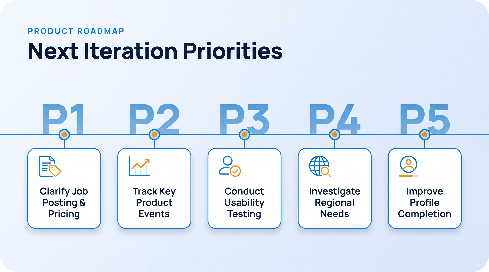
14. Key Learnings
HSE Job was my first substantial experience turning an observed problem into a product used by real people.
Before this project, much of my experience involved developing ideas and bringing them into practice through theatre and dramaturgy. With HSE Job, I applied that ability in a different context: understanding the needs of two user groups, translating those needs into a product structure, prioritizing features, and working through implementation constraints.
Several lessons stayed with me:
• Research needs to inform decisions: Feedback becomes valuable when it can be connected to a change in the problem definition or product design.
• UX goes beyond the interface: The experience had to connect three related needs.
• Reducing friction involves trade-offs: Making more profile fields optional can lower the entry barrier but may reduce the completeness of user information.
• Launching is not the end of product design: Real usage needs to be observed, issues prioritized, and outcomes measured.
• Technical constraints are part of product decisions: WordPress limited some of the changes I wanted to make, requiring me to balance the intended experience against what was feasible with our resources.
Ultimately, HSE Job was more than a website-building project. It gave me practical experience connecting research, design, implementation, and learning from real user behavior.
The project remained at the pilot stage. Continuing to the next phase would have required more time, funding, and a larger team. With limited personal resources and compulsory military service approaching, I could not continue expanding the product.
Nevertheless, the experience strengthened my commitment to product design and helped me understand the difference between having an idea, building a product, and evaluating how it performs in practice.
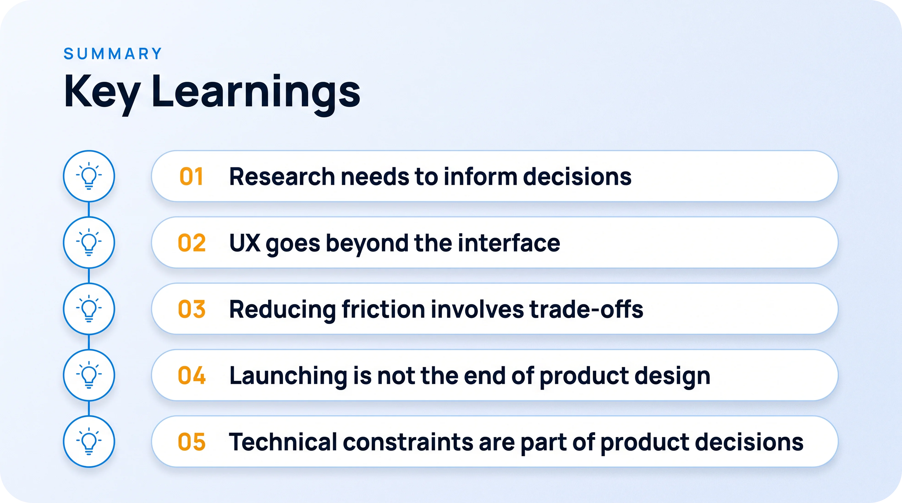